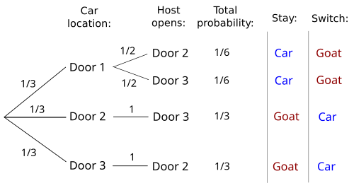

วิชาคณิต

เรขาคณิตพื้นฐานที่เราเรียนในโรงเรียนคือเรขาคณิตของยูคลิดที่อยู่บนระนาบแบน แต่ในความเป็นจริง โลกและจักรวาลของเรามีลักษณะเป็นเส้นโค้ง เรขาคณิตนอนยูคลิดจึงถูกพัฒนาขึ้นเพื่ออธิบายพื้นที่เหล่านี้ เช่น บนระนาบทรงกลม มุมภายในของรูปสามเหลี่ยมจะบวกกันได้มากกว่า $180^\circ$ เสมอ แนวคิดนี้ไม่ได้เป็นเพียงคณิตศาสตร์เชิงนามธรรม แต่เป็นเครื่องมือสำคัญที่อัลเบิร์ต ไอสไตน์ นำมาใช้ในทฤษฎีสัมพัทธภาพทั่วไปเพื่ออธิบายว่ามวลของดาวเคราะห์ทำให้สเปซไทม์โค้งงอ และยังถูกนำมาคำนวณปรับแต่งพิกัดในระบบ GPS ให้มีความแม่นยำในชีวิตประจำวัน